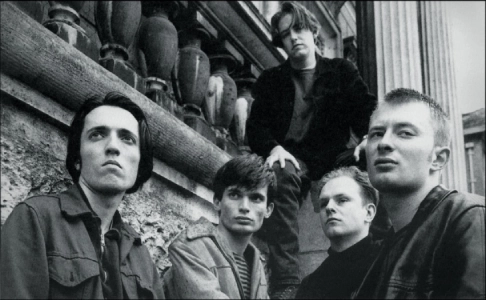
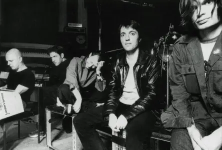
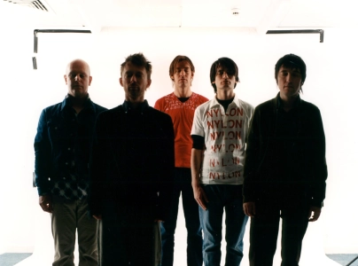
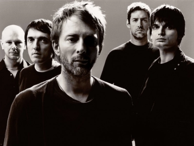
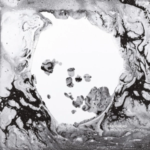

The early years (1992 - 1995)
Radiohead released their first single, "Creep" in 1992. The song was initially unsuccessful, but it became a
worldwide hit several months after the release of their debut album, Pablo Honey (1993). Radiohead's
popularity rose in the United Kingdom with the release of their second album, The Bends (1995). The band's
textured guitar parts and Yorke's falsetto singing were warmly received by critics and fans.
International success (1996 - 2000)
Radiohead's third album, OK Computer (1997), propelled them to greater international fame. Featuring an
expansive sound and themes of modern alienation, OK Computer has often been acclaimed as a landmark record of
the 1990s.


A change in style and leaving EMI (2000 - 2003)
Kid A (2000) and Amnesiac (2001) marked a change in the band's musical style. Radiohead incorporated
experimental electronic music, Krautrock, post-punk and jazz influences into their songs, dividing fans and
critics, but they remained popular. Hail to the Thief (2003), a mix of guitar-driven rock, electronics and
lyrics inspired by headlines, was the band's final album for their major record label, EMI.
Independent releases and touring (2005 - 2013)
In 2007, Radiohead independently released their seventh album, In Rainbows, originally as a digital download
for which each customer could set their own price, later in stores, to critical and chart success.
In 2011, Radiohead released their eighth album, The King of Limbs - again independently - which was described
as an exploration of rhythm and quieter textures.
In February 2012, Radiohead began The King of Limbs world tour - with concerts in the US, Canada, Mexico,
Europe, Japan, Taiwan, South Korea, Australia and New Zealand. In early 2013, following the tour, Thom Yorke
released a studio album entitled Amok with his band Atoms for Peace.


Ninth Studio Album - "A Moon Shaped Pool" (2016)
After much speculation, on May 8, 2016, Radiohead released their long awaited ninth album,"A Moon Shaped
Pool" on various streaming services. The band announced the release of their latest 11-track album on Twitter.
The first track from the album was "Burn the Witch".